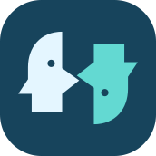

Start a conversation
Illustrative Silica-style layouts, not native screenshots. The Sailmate icon is the sample photo. Attach, remove and simulated Send work locally; no image is uploaded and no AI request is made. The native app opens the Sailfish photo picker.

Requires an image-capable model. The photo is sent to this provider and saved with this chat.
Illustrative previews, not native screenshots. Layouts reflect the current QML. Fonts, Ambience, gestures and keyboard behaviour require Sailfish device testing. All conversations and endpoints below are samples; no credentials or API requests are used.
Key saved · Tap to start a new chat
An Anthropic API key and API billing are required.
Named OpenAI-compatible API profiles.
https://gateway.example.org/v1
API key required
Pull down to add a named OpenAI-compatible endpoint.
vendor/chat-model
vendor/code-model
vendor/chat-model
https://ai.example.org/v1
Saved on device (recorded)
Automatic discovery
Not connected
Recorded credentials are not checked here. Model availability does not verify chat access or billing.
Include /v1 if required.
https://ai.example.org/v1
Your key and messages are sent to this endpoint.
Messages go directly to the selected provider. Switching providers starts a new chat; existing chats remain with their original provider.
https://ai.example.org/v1
Copying places the conversation on the system clipboard. It may contain private information.
Compatible endpoints: OpenAI-compatible streaming chat completions with Bearer authentication. HTTPS is required. Include /v1 if required; Sailmate appends /models or /chat/completions. URL credentials, query strings, fragments, Azure deployment URLs and custom headers are not supported.
Leave the model ID empty to discover models. A manual model skips access verification until a chat request is sent. Profiles are saved before key entry; changing an endpoint requires a separate profile. Deleting a profile removes its key and local chats; removing only the key keeps its profile and history.
Back to profile previewKeys are stored using Sailfish Secrets. Configure a device lock and unlock when requested. Connect checks model-list access, not billing or chat availability. Manual models save keys without access verification; the native form retains the warning “Saves your key without verifying access.” above Save and continue.
Recover saved key checks an existing secret and repairs its settings index when possible; it cannot restore missing Custom profile metadata. Keys and messages go to the selected endpoint, whose retention policies apply. API charges may apply independently of consumer chat subscriptions.
Back to key previewIllustrative mockups based on the current QML — not screenshots of a running Sailfish app. Actual Silica fonts, spacing, icons, Ambience and keyboard behaviour must be checked on-device. Sample chat text is fictional. This page makes no network requests and does not accept API keys.
Jump to the new Custom endpoint screens ↓
API key required. ChatGPT subscriptions do not include API usage.
An Anthropic API key and API billing are required.
Messages go directly to the selected provider. Switching providers starts a new chat; existing chats remain with their original provider.
Enter your API key. It will be stored using Sailfish Secrets, not in your chat history. Validation checks access to the model list; chat availability also depends on billing and model permissions.
Native password field supports revealing the key. Connection progress and errors appear below the button.
Key saved · Tap to start a new chat
An Anthropic API key and API billing are required.
Messages go directly to the selected provider. Switching providers starts a new chat; existing chats remain with their original provider.
Delete icon is symbolic here. The app uses Sailfish’s native delete icon and a confirmation dialog.
Illustrative states of the new flow. Names, URLs and model IDs below are fictional. Forms are static and accept no credentials. Long native pages scroll; these mockups condense explanatory text.
Connect directly with an OpenAI API key.
Connect directly with an Anthropic API key.
Named OpenAI-compatible API connections.
Each connection keeps its own key and conversation history.
https://ai.example.org/v1
Key saved · Tap to start a new chat
https://gateway.example.org/v1
Enter an API key to connect
Pull down to add another connection. Removing a key keeps its profile and history.
Pulley menu shown expanded for illustration.
Use only an endpoint you trust and are authorised to use. It receives your key and conversation.
Include /v1 when required. Sailmate appends /models or /chat/completions.
Leave empty to discover models. A manual model skips access validation.
For endpoint changes, create a separate profile.
https://ai.example.org/v1
Your API key is stored using Sailfish Secrets. Connect checks access to the endpoint's model list.
Chat availability also depends on billing and model permissions. No key is entered in this preview.
https://ai.example.org/v1
Model: vendor/chat-model
The model list request is skipped. Saving does not verify authentication, billing or model access. These are tested when you send a message.
Fictional response — no API request was made.
Interactive illustration with sample model IDs, not a running Sailfish screen.
Preview only · No changes to the application design or runtime · Back from chat returns to provider-specific history. Send glyph and back symbol are illustrative; the app uses native Sailfish page-stack navigation. Model picker and history use native lists.